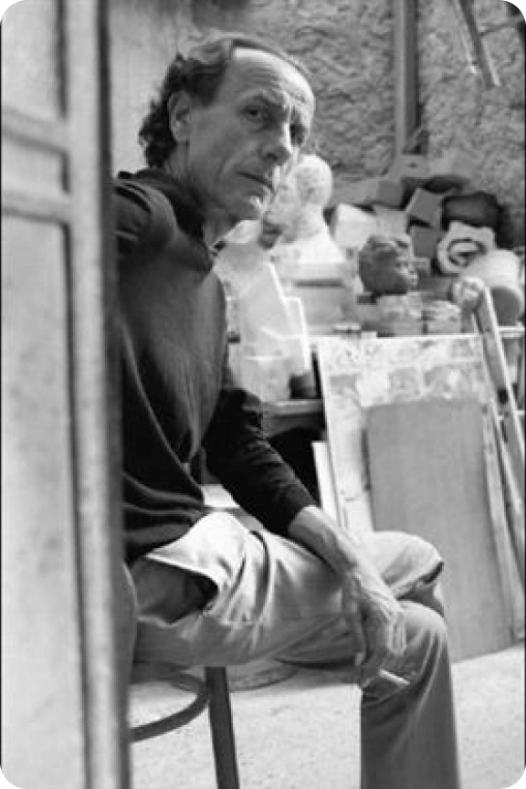
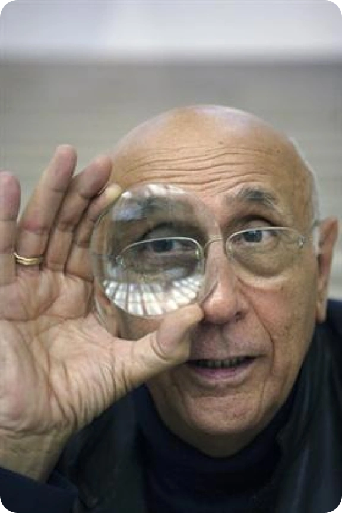

Retrouvez toutes les informations concernant notre exposition sur le Trans-avant-garde
L’exposition aura lieu à la fondation cartier du 13 avril au 23 juin 2023 et présentera un mouvement d’art connu que de très peu de personne: le trans-avant-garde
Qu’est-ce que le trans-avant-garde
La Trans-avant-garde est un mouvement artistique contemporain, apparu à la fin des années 1970 en Italie. Ce mouvement, qui perdure encore aujourd'hui, a été créé par un groupe d'artistes décidant de réagir face à ceux qui proclamaient la fin de la peinture et la gloire de l'art conceptuel et minimaliste. La poignée d'artistes s'engageant alors dans cette cause prône un « retour aux formes traditionnelles de la peinture et de l'image imprimée ».

Quelques artistes liés au trans-avant-garde

